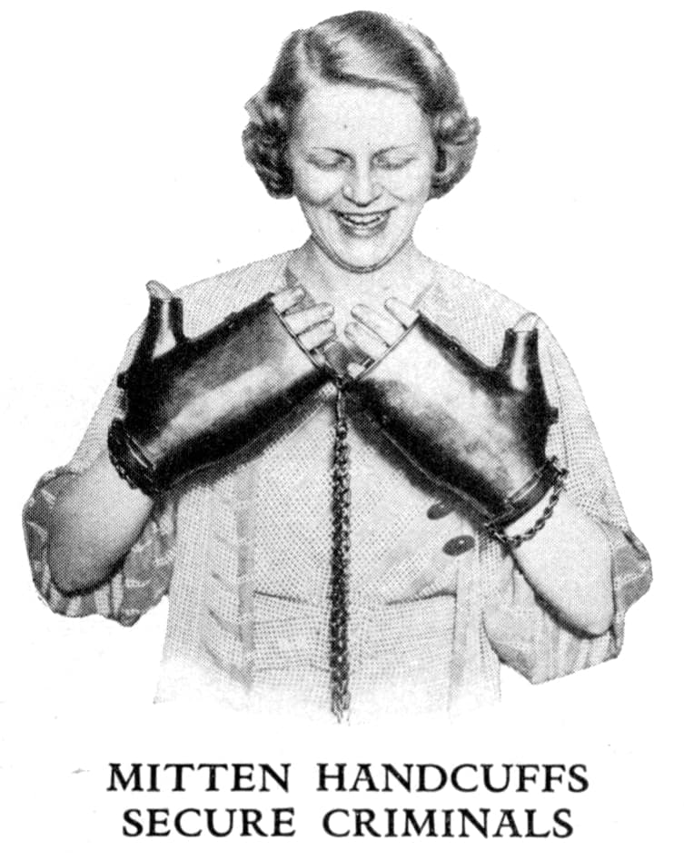

După evenimentele din 11 septembrie 2001 din S.U.A.1, numeroase țări au sacrificat libertățile civile pentru a face față luptei împotriva terorismului, fapt semnalat de Hina Gilani, reprezentant special pentru drepturile omului la ONU, într-un raport prezentat Adunării Generale a Națiunilor Unite: „Când se abuzează de ea – spune Gilani – legislația privind securitatea se poate transforma într-un instrument al terorii de stat.” Legile antiteroriste au învestit agențiile de impunere a legii și de informații cu puteri excepționale de supraveghere și anchetă fără un aviz judiciar, generând cazuri concrete când forțele de securitate au comis abuzuri culminând cu arestarea unor militanți pentru drepturile omului, lideri sindicali și studențești, activiști politici, membri ai unor grupări religioase, avocați sau ziariști, „ca răspuns la activitățile lor legate de drepturile omului”.
Mai mult, încă din anul 2005, comisarul european pentru Informații și Media, Viviane Reding, declara că Comisia Europeană propune înregistrarea obligatorie a mesajelor email, convorbirilor telefonice și altor mijloace electronice de comunicație de către companiile de telefonie și furnizorii de internet, punând astfel capăt confidențialității în acest domeniu. Practic, dacă până acum autoritățile aveau nevoie de mandat pentru a intercepta convorbirile unei persoane, viitorul ar urma să arate ca în faimosul „1984” a lui George Orwell, cu fiecare persoană „ascultată”. (Între timp, propunerea a ajuns lege și anul acesta a fost adoptată și la noi, fără vreo îndoială că nu ar fi bună.) Justificarea acestei propuneri: amenințarea terorismului este atât de înspăimântătoare, încât statele UE par dispuse să facă aproape orice pentru a-și proteja cetățenii, uneori chiar și împotriva voinței acestora. Cu un an înainte, în 2004, Franța, Irlanda, Marea Britanie și Suedia făcuseră astfel de propuneri după atentatele de la Madrid.
Nici România nu a făcut excepție de la inițiative ce restricționează drepturile și libertatea cetățenilor. După ce, printr-un act normativ decretat în 2003, s-a hotărât ca toate ecvinele (cai, catâri, etc.) să fie dotate cu un cip implantat sub piele, iar bovinele cu crotali, demersurile unor asemenea legi (cum era de așteptat) nu i-au trecut cu vederea nici pe cetățeni. Astfel, potrivit Ordonanței de Urgență a Guvernului 60/2006, prin care se intervine asupra articolului 145 din Codul de procedură penală, instanțele pot dispune pe perioada măsurii obligatorii de a nu părăsi localitatea, ca învinuitul sau inculpatul să poarte un sistem de supraveghere electronic. Potrivit unor declarații ale oficialilor Ministerului Justiției, cea mai probabilă variantă ar putea fi aceea a unor BRĂȚĂRI ELECTRONICE. Așadar senatorii au decis în numele poporului: BRĂȚĂRI CU CIP în loc de arest preventiv. Alți senatori au ridicat problema încălcării drepturilor omului și a prezumției de nevinovăție prin prevederile articolului 145: „Măsura supravegherii electronice a persoanelor pe timpul procesului penal încalcă grav prezumția de nevinovăție, stipulată în Constituție, precum și prevederile Convenției Europene pentru Drepturile Omului” – a declarat senatorul liberal Norica Nicolai, membru al Comisiei Juridice a Senatului. Conform Noricăi Nicolai, în practica europeană și americană, acest sistem de monitorizare se utilizează doar pentru persoanele condamnate definitiv și numai pentru categoria celor ale căror fapte au un grad foarte ridicat de periculozitate socială, cum sunt infracțiunile cu violență: omor sau infracțiuni de criminalitate organizată. „În timpul procesului penal, când funcționează prezumția de nevinovăție, acest mijloc de supraveghere este o încălcare clară a drepturilor omului și a libertății de mișcare” – a subliniat senatorul liberal. „Sub aspectul demnității umane, eu aș prefera să fiu arestat, decât să mi se implanteze cipuri” – a conchis senatorul PRM Valentin Dinescu (Rompres).
Pentru a nu se crea suspiciuni, se cuvenea ca inițiativa să fi fost supusă unui referendum național, ori cel puțin dezbaterilor publice, mediatizată, nu ținută la secret și impusă cetățenilor. Așa s-a procedat și în cazul eliberării noilor buletine de identitate, sau a implantării cipurilor și aplicării „crotalilor” la animale, ori în cazul obligativității „asomării” porcilor înainte de tăiere (excepție nu fac nici normativele privitoare la amenajarea stânelor și a distribuirii lactatelor și nici directivele spațiului necesar creșterii păsărilor – în fond mijloace deghizate de descurajare a gospodăriilor private, incomode marilor concerne alimentare supranaționale).
Cu ani în urmă, temerile euroscepticilor păreau neîntemeiate, ridicole, oficialii dar și oamenii de rând socotindu-le obsesii anacronice ale celor ce nu înțeleg cât de benefică este pentru noi integrarea în Uniunea Europeană. Acum însă, s-a ajuns ca guvernanții înșiși să fie copleșiți de deciziile propriilor colegi, teoretic garanți ai respectării libertăților civile și ai drepturilor omului. Dacă astăzi intențiile de monitorizare și supraveghere a populației nu pot fi stopate – nu de oamenii de rând, ci de politicieni lucizi și onești, câți au mai rămas – ce va fi în viitor, când știința va oferi mai multe înlesniri, haosul întreținut deliberat va justifica întru totul securizarea cetățenilor iar politicieni de felul senatorilor citați nu vor mai exista, ori vor fi reduși la tăcere?
Observăm că legalizarea abuzurilor autorităților în ceea ce privește libertatea persoanei include legalizarea încălcării propriilor legi, stipulate în Convenția Drepturilor Omului și în Constituția României. INFRACȚIUNE care, peste noapte, devine PROCEDURĂ JURIDICĂ, prin mijlocirea căreia cetățeanul este lipsit de prezumția de nevinovăție și transformat din oficiu în infractor. Situație analogă guvernării comuniste; care, pentru a sancționa LEGAL opozanții regimului, făcea rabat de la legile proprii. Fapte ce dovedesc că, ușor-ușor, se pun bazele unei dictaturi europene, transformând Europa într-un ghetou de proporții, cu granițele lărgite, unde cei înfricoșați de himera terorismului internațional vor fi terorizați – în numele securității statului european – de cei ce se erijează în apărători ai drepturilor omului.
Dacă, precum observa Norica Nicolai, în practica europeană și în cea a Statelor Unite monitorizarea se aplică doar celor CONDAMNAȚI DEFINITIV, iar în România și celor doar INVINUIȚI – așadar NUMAI BĂNUIȚI, iar nu DOVEDIȚI ÎN INSTANȚĂ – deducem că practic orice român poate fi ridicat de pe stradă și, în virtutea suspectării de vreo fărădelege, să i se atașeze „brățara cu cip”, devenind subit „condamnat definitiv”. Nu trebuie să ne amăgim că, de vreme ce acum nu există astfel de situații în practică (oare?), în viitor va fi tot așa, odată ce s-a creat cadrul legislativ pentru astfel de abuzuri. Acestea sînt argumente neîndoielnice că forurile europene instituie legi ce resping drepturile civile nu pentru protejarea cetățenilor de terorism, ci pentru protejarea sistemului politic UE de cetățeni, vădindu-se adversar al libertății nesupravegheate. Când unul din oficialii Pieței Europene a fost întrebat ce se va întâmpla cu cei ce nu vor accepta normativele europene, acela a mărturisit: „Avem destule mijloace prin care îi vom forța pe toți să accepte aceste sistem.” Tot așa – când la una din ședințele ONU, în 1977, s-a pus aceeași problemă – răspunsul a fost: „Numărul personal (CNP-ul) al cetățenilor respectivi va fi anulat, ei urmând a fi lichidați imediat. N-avem nevoie de adversari ai noii ordini mondiale.”
Pentru înfăptuirea sistemului totalitar, oficialii UE au de partea lor cadrul legislativ și metodele practice. Dar, cu toate acestea, creștinii îi vor înfrunta! Nu cu puterile lor, ci în Hristos, Care toate le poate câte le voiește.
Cu ceva timp în urmă, un jaf petrecut la o casă de schimb valutar din Brașov, soldat cu împușcarea a două persoane a pus pe jar întreaga mass-media, îngrozită de cruzimea făptașului, a cărui identitate nu s-a aflat nici pînă azi. Straniu mi s-a părut faptul că incidentul s-a petrecut exact în perioada când în societatea românească fusese declanșată campania de strângere a semnăturilor împotriva violării libertății umane și a intimității, amenințate de controversata îndosariere electronică a populației prin intermediul introducerii CIP-ului în pașaport și permisul auto. Ticluită de dracul ori de stăpânire, „coincidența” mi s-a părut suspectă, presimțind că evenimentul ar putea servi cu succes măsurilor de supraveghere și control instituite în parte de guvernul din ce în ce mai „îngrijorat” de siguranța cetățenilor. Și totuși – în pofida avertismentului lăuntric, altminteri logic și firesc într-o societate ce se dorește desecretizată și ca atare monitorizată – mi-am alungat gândul ca pe un vis urât și superstițios, de care mie – cetățean european eliberat de angoase și bariere ideologice, om al secolului XXI – trebuia să-mi fie rușine. „Drepturile omului”, „respectul valorilor umane”, „cuceririle democrației”, „inviolabilitatea intimității” etc. îmi strigau obsesiv în urechi că nu am a mă teme, că sunt liber, că suspiciunile îmi sunt neîntemeiate, fanteziste, ridicole, întrucât trăiesc într-un stat democratic, care desigur garantează constituțional drepturile cetățenești. Pe de altă parte refuzam să cred că autoritățile ar putea fi atât de sprintene în a sesiza oportunitatea ce se ivise la țanc (dacă nu cumva fusese programată deliberat, conform principiului cauză-efect) spre a servi… „democrației originale”, deși pe timp ce trece m-am deprins să fiu din ce în ce mai sceptic față de declarațiile oficiale, cu atât mai mult cu privire la intențiile practice ale stăpânirii.
Dar iată că presimțirile-mi șubrede s-au adeverit. Conform ziarului „Lumina” din 7 februarie 2009, primăria Brașovului a realizat un proiect prin care va fi creat un sistem video instalat pe mai multe străzi ale orașului, pentru a supraveghea zonele intens circulate. „Toate imaginile surprinse de sistemul video vor fi transmise și stocate în dispeceratul care va funcționa la primăria Brașovului cât și la cel de la poliția municipiului” – preciza purtătorul de cuvânt al primăriei brașovene. Ca să avem și noi „Londra” noastră, unde „Big Brother” vede și știe tot ce mișcă în stradă, desigur pe banii poporului. În loc să creeze patrule de poliție pregătite corespunzător pentru împiedicarea infracțiunilor, organele locale au găsit de cuviință supravegherea cetățenilor nevinovați laolaltă cu hoții și criminalii, punându-i pe toți în aceeași oală. Cum poate fi motivată etic și juridic urmărirea cetățenilor pașnici care, potrivit legilor constituționale, beneficiază de prezumția de nevinovăție, fără a încălca aceste legi?
Apoi, ce și cât îi mai revine lui Dumnezeu Atoatevăzătorul, dacă destinele oamenilor sunt încredințate supravegherii computerizate? În ateismul său, omul modern – sceptic cu privire la dumnezeiasca pronie, la purtarea de grijă a lui Dumnezeu – își pune soarta în mâinile omului și ale științei, nădăjduind că îl vor izbăvi de frică, obsesii și nesiguranță, consecințe firești, binemeritate ale necredinței și depărtării de Dumnezeu. Omul credincios – creștinul iubitor de Hristos, străin de aceste psihoze – nu simte nevoia protejării monitorizate, ci împotriva oricăror primejdii cugetă precum David: „Domnul este ajutorul meu și mântuitorul meu, de cine mă voi teme? Domnul este păzitorul meu, de cine mă voi înfricoșa?” Fiindcă acesta este adevărul: oamenii, în virtutea unei susținute și îndelungate campanii de înfricoșare prin mijlocirea mass-mediei, se tem pentru viețile lor lipsite de credință în Dumnezeu, așteptând/căutând/cerînd sprijinul autorităților, oricum ar fi, numai să trăiască bine și în siguranță. Și aceasta chiar dacă le sunt știrbite drepturile umane elementare, chiar dacă le este primejduită libertatea intelectuală și spirituală, chiar dacă în favoarea siguranței materiale trebuie să se prostitueze sufletește, precum se cerea în temnițele comuniste în vremea așa-zisei „reeducări”. Omul vrea să trăiască, și pentru asta e în stare de orice: se minte cu privire la practicile și idealurile U.E., se minte când e avertizat privitor la implementarea în societate a îndosarierii electronice, se minte când vine vorba de nocivitatea Gardasil-ului, de ecumenism, de Noua Ordine Mondială…
În acest context se înscriu pledoariile pro-îndosariere ale unor publiciști (vezi „argumentația” cunoscutului Gheorghiță Ciocioi), stareți (Ierom. Teodosie de la…), teologi (Radu Preda). Care, „tâlcuind” proorociile Sfinților Părinți cu privire la pecetluire, interpretează metaforic acest proces, „înduioșați” de lipsa oricăror perspective familiale, profesionale, sociale pentru cei ce contestă legitimitatea îndosarierii. Astfel, unii păstori spun: Da, călugărilor le este ușor să se pronunțe împotriva CIP-urilor, însă creștinii au familii, rate în bănci, obligații sociale de care depinde viața lor, amănunte pe care monahii le ignoră. Observații care, în opinia lor, îndreptățesc acceptarea CIP-urilor. Dar oare nu la fel cugetă guvernanții? Și ce vom spune? Că, dacă teoretic nu există șansa supraviețuirii fără acceptarea CIP-urilor, asta înseamnă că cei ce pledează pentru acceptarea lor au dreptate? Nicidecum! Altminteri, ar trebui îndreptățiți toți cei ce de-a lungul istoriei au apostaziat de la Hristos, întrucât potrivit acestei retorici n-au avut încotro, au fost siliți etc. Aceasta e totuna cu a justifica reaua credință, puțina credință sau necredința. Însă, din zorii creștinismului și până în vremea prigoanei comuniste, iubitorii de Hristos au arătat că statul nu este infailibil, putând fi înfruntat chiar cu prețul vieții atunci când credința o cere – certitudine a mântuirii în Hristos – decât acceptând condițiile necreștine de viețuire impuse de stăpânire – mijloc de abatere de la viața în Hristos. Ca atare creștinii, indiferent de categoria socială din care fac parte, pentru a rămâne drept-slăvitori (ortodocși), sunt datori să refuze orice sistem de supraveghere și monitorizare a vieții intime, fiindcă singurul care are dreptul să vegheze asupra lor este Iisus Hristos, Fiul lui Dumnezeu, Stăpânul cerului și al pământului. Ignorând acest adevăr, singurul izbăvitor de orice tiranie, nu vor putea sta împotriva dictaturii electronice universale care, chiar dacă se va amâna pentru o vreme, în cele din urmă tot se va instaura pe pământ, înțărcuind libertatea popoarelor. Fiindcă, îndărătul aspirațiilor globaliste se află nu rațiunea umană, ci stăpânul întunericului, în mâna căruia arhitecții noii ordini mondiale sunt simple unelte însuflețite de utopia binelui, în numele căruia umanitatea va fi îngenuncheată.

Pe 14 ianuarie a.c., părintele Iustin Pârvu de la Mănăstirea din Petru Vodă a dat un comunicat prin care solicită mobilizarea generală a tuturor românilor împotriva îndosarierii electronice proiectată de guvern a fi adoptată în România încă din primele luni ale anului. Ce se urmărește de fapt? Instaurarea unei dictaturi polițienești electronice de supraveghere și control la nivel național și global prin mijlocirea pașapoartelor și permiselor auto conținând cipul biometric, în care sunt introduse amprenta digitală, imaginea facială, informații privind starea de sănătate, dar și restricționări ca împiedică accesul în instituții publice, în mijloace de transport în comun sau pe autostradă, și chiar deplasarea liberă dintr-un oraș în altul. În acest context, dacă cetățeanul este în dezacord cu statul în urma convingerilor sale religioase, politice, etc., autoritățile pot dispune fără nici o opreliște, în virtutea supravegherii electronice permanente, arestarea cetățeanului incomod politicii statului, considerat „terorist”, titulatură ce-l desemnează în fond pe fostul „dușman al poporului” din perioada comunismului.
Privitor la CIP-ul ce înlocuiește cu succes funcția „turnătorului” la securitate, Părintele Iustin avertizează: „Poate că pentru mulți dintre dumneavoastră acest CIP pare un lucru nesemnificativ, dar în spatele acestui sistem de însemnare a oamenilor, de codare și stocare a datelor de identificare se ascunde o întreagă dictatură, un întreg plan demonic, prin care de bunăvoie îți vinzi sufletul diavolului. Însemnarea oamenilor ca pe vite este primul pas al unor măsuri luate pentru controlul absolut al ființei umane.” Eficiența folosirii CIP-ului împotriva celor incomozi regimului poate fi ușor înțeleasă, chibzuind asupra unei întâmplări petrecute sub regimul comunist. Părintele Dimitrie Bejan povestea că în ziua în care a fost eliberat din temniță s-a așezat la rând pentru a-și cumpăra o pâine. Ajungând în fața tejghelei, părintele a întins banii, cerând vânzătoarei O PÂINE. Însă vânzătoarea ceru să-i arate CARTELA. Când Părintele spuse că NU ARE CARTELĂ – insistând că vrea să CUMPERE PÂINEA cu BANI – vânzătoarea ÎL REFUZĂ, precizând că NU ÎI POATE DA FĂRĂ CARTELĂ. Biruit de situație, părintele plecă fără să fi putut cumpăra. Însă o bătrână, care AVEA CARTELĂ, îl trase de mânecă și-l milui discret cu o pâine, după care dispăru într-o curte. De altfel, toți ne amintim cum, lunar, românii își primeau rația de zahăr și ulei, prezentând vânzătorului nu numai banii, ci și cartela. Așadar nu e greu de priceput că CIP-urile îndeplinesc acum funcția cartelei de odinioară, oferind practic autorităților posibilitatea exercitării aceluiași control și șantaj comunist asupra persoanei. Nu întâmplător Fericitul Mărturisitor anticomunist Valeriu Gafencu prevenea, spunând: „Comunismul va cădea, dar atenție cu ce va fi înlocuit” (Ioan Ianolide, „Întoarcere la Hristos”). Îngrijorare împărtășită și de Sfântul Serafim Rose, un adevărat prooroc al evenimentelor cu care astăzi ne confruntăm, despre care avertiza încă dinainte de anii ’80. Referindu-se la sistemul de îndosariere electronică, Cuviosul Paisie Aghioritul vedea o strânsă legătură între regimul comunist și actualul regim european, precizând că, „pe cât s-a vătămat Ortodoxia prin comunism, pe atât se va vătăma și acum” (în „Hristos și puternicii zilei. Îndosarierea electronică, principalul instrument de supraveghere și control al dictaturii mondiale”, 2003).
Ca atare, numai orbii, lașii, fricoșii, trădătorii, oportuniștii, etc. nu văd că „vremurile de acum desăvârșesc ceea ce s-a făcut sub comunism” (Pr. Iustin Pârvu, în „Credința Ortodoxă”, noiembrie 2002). Intențiile comuniste ale actualei și viitoarei dictaturi politice europene rezidă în înseși declarațiile arhitecților Uniunii Europene și ale unora dintre oficialii ONU, care încă înainte de anii ’80 mărturiseau că vor folosi orice mijloace pentru instaurarea supravegherii electronice globale (vezi „Antihristul și pecetea lui”, Ed. Centrul de Misiune Sfântul Ierarh Ioan Maximovici, 2003). Motive ce ne determină să acordăm deplină încredere apelului către popor al părintelui Iustin de la Petru Vodă, cu atât mai mult cu cât experiența detenției anticomuniste îi dă posibilitatea să perceapă mai realist decât noi etapa istorică în care ne aflăm. Deși trufia intelectualilor cu „ștaif” și snobismul teologilor „subțiri” – smintiți de tonul ultimativ, direct și tranșant al comunicatului – nu sesizează gravitatea momentului, ci, „strecurând țânțarul și înghițind cămila” (precum cărturarii și fariseii din vremea Mântuitorului), minimalizează esența mesajului, se cuvine ca măcar poporul să ia aminte la chemarea părintelui și să se opună îndosarierii electronice chiar și cu prețul vieții. Întrucât proiectul îndosarierii electronice se opune libertății de conștiință, noi creștinii suntem datori să ne împotrivim oricăror „porunci nelegiuite și necredincioase ale împăraților, domnitorilor, stăpânitorilor acestei lumi, oriunde s-ar afla ei, și oricine ar fi” (Sfântul Iustin Popovici, „Biserica și statul”). Fiindcă, mărturisește pustnicul Nicodim de la Tarcău, se cuvine „să-L mărturisești pe Dumnezeu mai mult ca pe tine, ca pe frați sau surori, mai mult ca pe orice.”
1 Care au fost puse la cale de însuși Statul American, după o veche rețetă a înscenărilor sîngeroase. (n. red.)